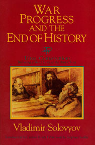

Page index / publications
War Progress and the End of History

War, Progress, and the End of History: Three Conversations, Including a Short Tale of the Antichrist.Vladimir Solovyov
Revised translation by Thomas R. Beyer, Jr.
(Lindisfarne Press: 1990)
ISBN 0-940262-35-5
Russia's greatest philosopher confronts evil in the world and the Anti-Christ.